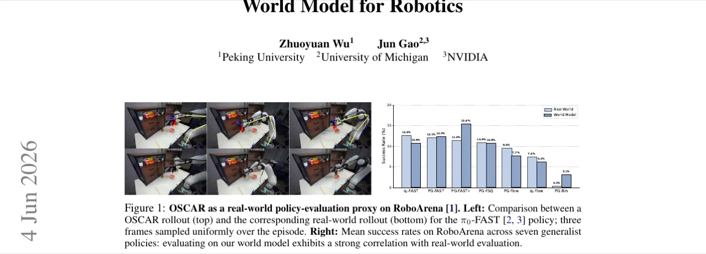
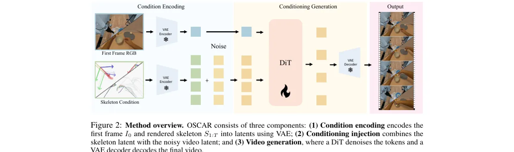
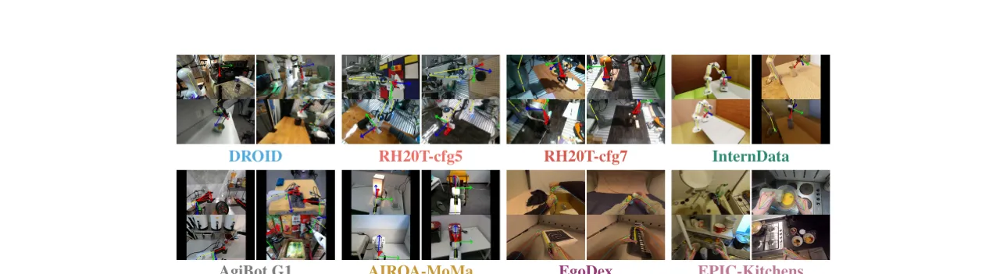
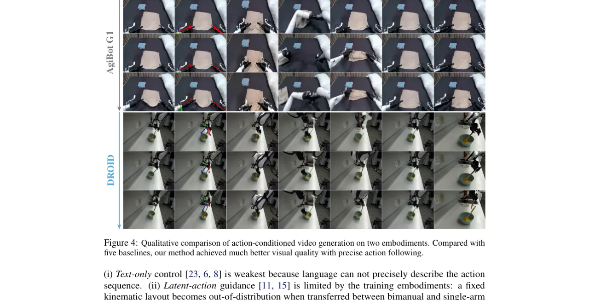

OSCAR 是一个精确的动作条件视频世界模型，可跨不同机器人形态泛化，并支持机器人策略的虚拟评估。它以 2D 运动骨骼渲染为统一条件表示，在大规模多源数据集上微调 Cosmos-Predict2.5-2B，在动作跟随精度、外观质量和运动一致性上全面超越参数量大数倍的基线，并在 RoboArena 上展现出与真实世界评估的强相关性。
现有视频世界模型在机器人策略真实评估中面临三大核心挑战：训练数据场景多样性不足、动作跟随不精准、以及跨机器人形态泛化能力差。
"Existing video world models face three main challenges for real-world robot evaluation: limited scenario diversity in current robot training datasets, imprecise action following, and poor generalization across embodiments for broad adoption."

视频需要在帧级别（何时发生）和像素级别（何处发生）精确跟随动作序列，才能为策略评估提供有意义的信号。Latent-action 方法将动作压缩为隐变量，往往无法精确传达空间运动。
策略评估需要覆盖不同任务、环境和动作序列。现有数据集（如 AgiBot）虽有百万条 clip，却集中在同一场景和任务，视觉多样性极低。
世界模型应能泛化到不同机器人形态（Franka Panda、KUKA iiwa、AgiBot G1 等），而非绑定单一机器人，才能支持广泛的策略评估应用。
（1）大规模标准化数据流水线：跨 4 种机器人和 2 种人手数据源，经过去冗余、质量过滤，构建覆盖广泛的联合训练数据集。（2）2D 骨骼渲染统一条件：仅依赖运动链，无需机器人外观信息，可跨机器人乃至人手泛化。
OSCAR 在 Cosmos-Predict2.5-2B（一个 2B 参数的视频 Diffusion Transformer）基础上微调，以第一帧 RGB 图像和 2D 骨骼渲染序列为条件，自回归生成未来视频帧。

选择正确的动作表示是动作条件世界模型的核心。OSCAR 采用 2D 运动学骨骼（kinematic skeleton）渲染，在泛化性与精度之间取得平衡：
由于 S₁:T 仅编码 2D 关节投影，同样的条件表示可以无缝扩展到人手。MANO 人手模型的五指拓扑与机械臂运动链用同样的光栅化流程处理，使模型可以联合训练机器人和人体手部的 egocentric 视频，显著增加场景、任务和动作分布的多样性。
骨骼序列 S₁:T 经过与目标视频相同的 WAN 2.1 VAE 编码，得到骨骼隐变量 z_s，与带噪视频隐变量通过不同的 patch embedder（PE_v 和 PE_s）嵌入后相加，送入 DiT 进行去噪。训练时以概率 0.2 将 S₁:T 置零，以支持 classifier-free guidance（推理时 guidance scale w=6）。

从 2,165,359 条原始视频中清洗出 180,657 条高质量 episode，经过四阶段过滤：
在 200 条机器人操作 clip 组成的自建 benchmark 上评估（来自 Franka Panda、KUKA iiwa、AgiBot G1、Toyota HSR 四种形态），与七个基线对比，指标涵盖 PSNR、SSIM、LPIPS、tLPIPS、FVD、FID、L2_latent 和 FPS，全部在 NVIDIA GH200 GPU 上计时。
| 方法 | PSNR ↑ | SSIM ↑ | LPIPS ↓ | tLPIPS ↓ | FVD ↓ | FID ↓ | L2_lat ↓ | FPS ↑ |
|---|---|---|---|---|---|---|---|---|
| Cosmos-Predict2.5 | 14.78 | 0.563 | 0.370 | 0.022 | 18.01 | 47.59 | 0.435 | 0.292 |
| TesserAct | 16.26 | 0.730 | 0.277 | 0.055 | 24.50 | 51.90 | 0.364 | 0.343 |
| IRASim | 6.48 | 0.088 | 0.909 | 0.606 | 411.42 | 394.10 | 2.453 | 2.330 |
| Ctrl-World | 19.06 | 0.705 | 0.321 | 0.042 | 28.90 | 53.33 | 0.292 | 1.631 |
| EnerVerse-AC | 20.47 | 0.746 | 0.223 | 0.021 | 33.70 | 38.23 | 0.197 | 1.900 |
| Genie Envisioner | 23.29 | 0.838 | 0.140 | 0.007 | 15.37 | 22.92 | 0.129 | 1.382 |
| Kinema4D | 17.68 | 0.741 | 0.198 | 0.021 | 17.07 | 37.16 | 0.233 | 0.089 |
| OSCAR（本文） | 24.24 | 0.846 | 0.094 | 0.015 | 7.08 | 15.07 | 0.096 | 2.214 |
粗体为最优，下划线为次优。OSCAR 在七项指标中均达到最优或次优，且仅用 2B 参数，远小于 Kinema4D（14B）。

消融两个关键因素：条件表示和数据策略。
| 维度 | 变体 | PSNR ↑ | SSIM ↑ | LPIPS ↓ | FVD ↓ | FID ↓ |
|---|---|---|---|---|---|---|
| 条件表示 | Latent action | 19.22 | 0.784 | 0.170 | 12.03 | 26.11 |
| Mesh rendering | 23.11 | 0.831 | 0.106 | 7.89 | 16.38 | |
| Skeleton（最终） | 23.48 | 0.832 | 0.106 | 7.69 | 16.37 | |
| 数据策略 | +Human from beginning | 23.87 | 0.842 | 0.097 | 7.65 | 15.72 |
| +Human, warm-start（最终） | 24.24 | 0.846 | 0.094 | 7.08 | 15.07 |
关键发现：（i）Latent action 无法精准跟随动作；（ii）Mesh 和 Skeleton 在七项指标上统计上无显著差异，但 Mesh 依赖机器人 URDF 外观资产，无法引入人体数据；（iii）人体数据的引入一致提升所有指标，warm-start 策略（先用机器人数据训练再加入人体数据）优于从头混合训练。
将 OSCAR 部署到 RoboArena 公开排行榜，对 7 个通用 DROID 策略（π₀-flow、π₀-FAST、PG-flow、PG-FSQ、PG-FAST、PG-FAST+、PG-Bin）进行评估： 在 65 个 session 上自回归展开 OSCAR，用 GPT-5 评估每条 episode 的成功率，计算 Pearson 相关系数 r 和 Spearman ρ。
| 条件表示 | MMRV ↓ | ρ ↑ | r ↑ | SISR_Δ (pp) ↓ |
|---|---|---|---|---|
| Latent action | 1.429 | +0.643 | +0.867 | 1.98 |
| Mesh | 0.714 | +0.679 | +0.781 | 3.04 |
| Skeleton（本文） | 0.571 | +0.750 | +0.852 | 1.73 |
骨骼条件与真实世界部署的相关性最强（MMRV=0.571，Pearson r=+0.852），证明 OSCAR 可有效替代真实机器人评估。
"Our current data scale is limited by the availability and quality of per-dataset camera calibration and kinematic annotations: errors in camera intrinsics/extrinsics directly degrade skeleton–RGB alignment, limiting the availability of raw video data that can be reliably converted into usable training dataset." 即相机内外参数的误差会直接导致骨骼与 RGB 图像的对齐偏差，可用训练数据规模因此受限。
"Our model only uses a 2B-parameter backbone; scaling to larger backbones may further improve fidelity and generalization but requires more compute." 当前 backbone 为 2B 参数，更大规模的 backbone 可能进一步提升保真度和泛化能力，但计算成本相应增加。
数据过滤阶段主动剔除了相机运动的 episode（"We mainly focus on the robot action in our paper and defer the camera motion for future work"），因此当前模型不支持移动相机场景，限制了对移动操作任务的策略评估能力。